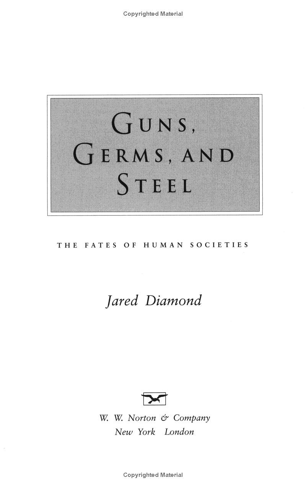
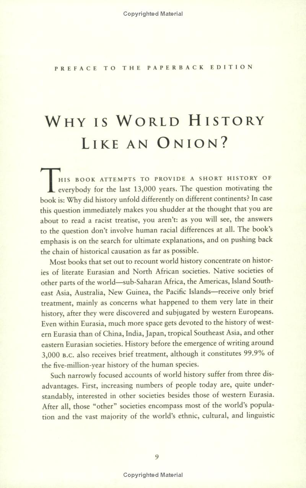
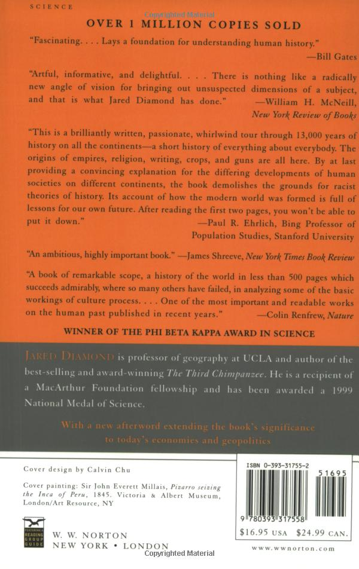

Guns, Germs, and Steel: The Fates of Human Societies
Why did Eurasians conquer, displace, or decimate Native Americans, Australians, and Africans,
instead of the reverse? In this “artful, informative, and delightful” (William H. McNeill, New York
Review of Books) book, a classic of our time, evolutionary biologist Jared Diamond dismantles racist
theories of human history by revealing the environmental factors actually responsible for its
broadest patterns.
The story begins 13,000 years ago, when Stone Age hunter-gatherers constituted the entire human population. Around that time, the developmental paths of human societies on different continents began to diverge greatly. Early domestication of wild plants and animals in the Fertile Crescent, China, Mesoamerica, the Andes, and other areas gave peoples of those regions a head start at a new way of life. But the localized origins of farming and herding proved to be only part of the explanation for their differing fates. The unequal rates at which food production spread from those initial centers were influenced by other features of climate and geography, including the disparate sizes, locations, and even shapes of the continents. Only societies that moved away from the hunter-gatherer stage went on to develop writing, technology, government, and organized religions as well as deadly germs and potent weapons of war. It was those societies, adventuring on sea and land, that invaded others, decimating native inhabitants through slaughter and the spread of disease.
A major landmark in our understanding of human societies, Guns, Germs, and Steel chronicles the way in which the modern world, and its inequalities, came to be.
The story begins 13,000 years ago, when Stone Age hunter-gatherers constituted the entire human population. Around that time, the developmental paths of human societies on different continents began to diverge greatly. Early domestication of wild plants and animals in the Fertile Crescent, China, Mesoamerica, the Andes, and other areas gave peoples of those regions a head start at a new way of life. But the localized origins of farming and herding proved to be only part of the explanation for their differing fates. The unequal rates at which food production spread from those initial centers were influenced by other features of climate and geography, including the disparate sizes, locations, and even shapes of the continents. Only societies that moved away from the hunter-gatherer stage went on to develop writing, technology, government, and organized religions as well as deadly germs and potent weapons of war. It was those societies, adventuring on sea and land, that invaded others, decimating native inhabitants through slaughter and the spread of disease.
A major landmark in our understanding of human societies, Guns, Germs, and Steel chronicles the way in which the modern world, and its inequalities, came to be.